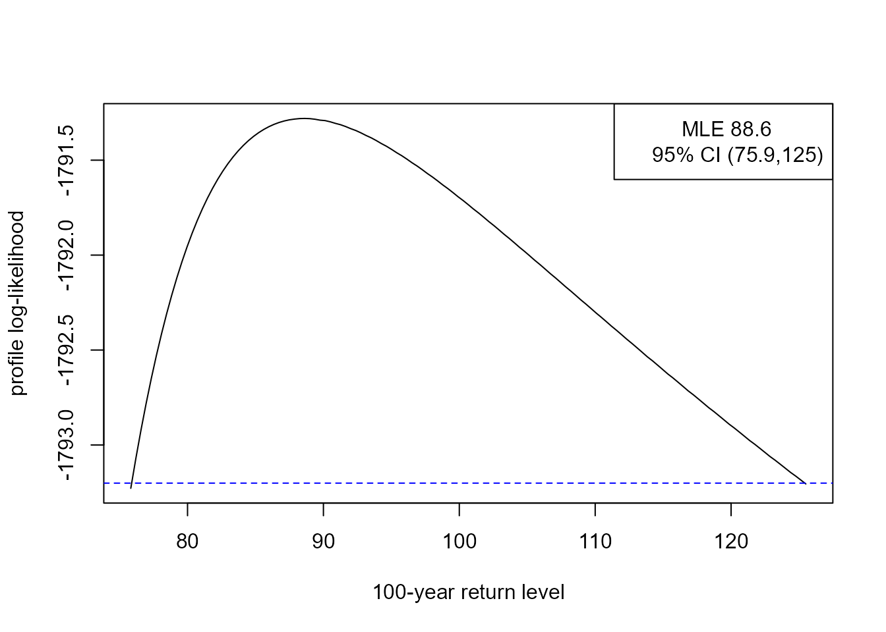

vignettes/lite-1-frequentist.Rmd
lite-1-frequentist.RmdThe lite package performs likelihood-based inference for stationary time series extremes. This vignette concentrates on frequentist inference, using maximum likelihood estimation. See the vignette Bayesian Likelihood-Based Inference for Time Series Extremes for information about Bayesian inference.
The general approach follows Fawcett and Walshaw (2012). There are 3 independent parts to the inference, all performed using maximum likelihood estimation.
For parts 1 and 2, inferences based on a mis-specified independence log-likelihood are adjusted to account for clustering in the data. The adjustment does not affect the point estimates of \((p_u, \sigma_u, \xi)\) but it ensures that estimates of uncertainty associated with these estimates account for dependence in the data. Otherwise, uncertainty in these parameters will tend to be underestimated.
Here, we follow Chandler and Bate (2007) to estimate adjusted log-likelihood functions for \(p_u\) and for (\(\sigma_u, \xi\)), using the chandwich package (Northrop and Chandler 2021). For details of the log-likelihood adjustments see the introductory vignette for the chandwich package. We will see below that although there is more than one way to perform this adjustment there is a strong argument in favour of the so-called vertical adjustment. A vertical adjustment adjusts on the log-likelihood scale, thereby respecting constraints on the parameter values, whereas the horizontal adjustment adjusts on the parameter scale.
For part 3, the methodology described in Süveges and Davison (2010) is used, implemented by the function kgaps in the exdex package (Northrop and Christodoulides 2022). The \(K\)-gaps model involves a tuning parameter \(K\) that defines how distant in time threshold exceedances need to be before they are considered to be from separate clusters of threshold exceedances. In addition to providing an estimator of \(\theta\), Süveges and Davison (2010) provides a diagnostic to inform the choice of \(K\) and the threshold \(u\). We use this diagnostic below, but it would also be advisable also to examine graphically the effect of \((u, K)\) on extremes value inferences, by plotting point estimates and confidence intervals for key quantities such as the generalised Pareto shape parameter \(\xi\) or return levels of interest.
The (adjusted) log-likelihoods produced in parts 1, 2 and 3 are combined to form a log-likelihood for \((p_u, \sigma_u, \xi, \theta)\) from which extreme value inferences can be made.
We use an example dataset to illustrate the use of the two main functions in lite, that is, flite and returnLevel. The 744 by 10 matrix cheeseboro, available from the exdex package, contains hourly maximum wind gusts (in miles per hour) recorded at the Cheeseboro weather station near Thousand Oaks, Southern California, USA during the month of January over the period 2000-2009. Column \(i\) contains the hourly values for year \(1999+i\). These data are sourced from the Cheeseboro page of the Remote Automated Weather Stations USA Climate Archive. The following plot shows the general behaviour of these data.
For estimating \((p_u, \sigma_u, \xi)\) we treat observations from different years as being in separate clusters. In the code below we do not need to set the argument cluster explicitly because when the data are supplied as a matrix the function flite sets cluster automatically to achieve this. A total of 42 observations are missing in cheeseboro. This causes no problems for inferences about \((p_u, \sigma_u, \xi)\). For making inferences about \(\theta\) using the \(K\)-gaps model the kgaps function splits the data further into sequences of non-missing values and constructs the sample \(K\)-gaps separately for each sequence.
We need to choose values for the tuning parameters threshold \(u\) and \(K\)-gaps run parameter \(K\). There is no definitive way to do this but the information matrix test developed in Süveges and Davison (2010) can help to make this choice. Based on the \(K\)-gaps section of the introductory vignette for the exdex package we choose \(u = 45\)mph and \(K = 3\).
library(lite)
cdata <- exdex::cheeseboro
# Each column of the matrix cdata corresponds to data from a different year
# flite() sets cluster automatically to correspond to column (year)
cfit <- flite(cdata, u = 45, k = 3)
summary(cfit)
#>
#> Call:
#> flite(data = cdata, u = 45, k = 3)
#>
#> Estimate Std. Error
#> p[u] 0.02771 0.005988
#> sigma[u] 9.27400 2.071000
#> xi -0.09368 0.084250
#> theta 0.37960 0.027220
summary(cfit, adjust = FALSE)
#>
#> Call:
#> flite(data = cdata, u = 45, k = 3)
#>
#> Estimate Std. Error
#> p[u] 0.02771 0.001908
#> sigma[u] 9.27400 0.858100
#> xi -0.09368 0.061040
#> theta 0.37960 0.027220The effect of the adjustment of the log-likelihood for clustering is to increase the estimated standard errors for the parameters \(p_u\) and \((\sigma_u, \xi)\) in comparison to those obtained with no adjustment.
A plot method for objects inheriting from class "flite" enables us to inspect the log-likelihood functions for \(p_u\), \((\sigma_u, \xi)\) and \(\theta\). This first set of plots use the default vertical adjustment to the log-likelihoods for \(p_u\) and \((\sigma_u, \xi)\).
plot(cfit)The line superimposed on the on the plot on the top right shows the boundary of the log-likelihood imposed by the constraint \(\xi > -\sigma_u / x_{(n)}\), where \(x_{(n)}\) is the largest threshold excess. Using the vertical adjustment ensures that this constraint is respected after adjustment. However, if we use one of the horizontal adjustments, cholesky or spectral, then the adjusted log-likelihood has non-zero density values outside of the correct support. This is why the vertical adjustment is the default.
plot(cfit, which = "gp", adj_type = "spectral")The \(m\)-year return level is the value that is exceeded with probability \(1/m\) in any given year. To infer this from time series data we need to take account of the (intended) sampling frequency of the data. In the context of the Cheeseboro data, a year is effectively one month because we are making inferences about extremal behaviour in January. If there are no missing values then there are \(31 \times 24 = 744\) hourly values per January. We denote this by \(n_y\) (number of observations per year).
The \(m\)-year return level is given by \[x_m = u+\frac{\sigma_u}{\xi} \left[ p_u^\xi \left\{ 1-\left( 1-\displaystyle \frac1m\right)^{1/n_{y}\theta} \right\}^{-\xi} - 1 \right].\]
If \(m n_y \theta\) is large then \[x_m \approx u+\frac{\sigma_u}{\xi} \left[ (m \, n_{y}\, \theta \, p_u)^\xi - 1 \right].\] The returnLevel function performs inferences about return levels. It uses the former expression for \(x_m\). By default it calculates two types of (95%) confidence intervals: (a) intervals based on approximate large-sample normality of the maximum likelihood estimator for return level, which are symmetric about the point estimate, and (b) profile likelihood-based intervals based on an (adjusted) log-likelihood.
rl <- returnLevel(cfit, m = 100, level = 0.95, ny = 31 * 24)
summary(rl)
#>
#> Call:
#> returnLevel(x = cfit, m = 100, level = 0.95, ny = 31 * 24)
#>
#> Estimate Std. Error
#> m = 100 90.93784 10.47438
rl
#>
#> Call:
#> returnLevel(x = cfit, m = 100, level = 0.95, ny = 31 * 24)
#>
#> MLE and 95% confidence limits for the 100-year return level
#>
#> Normal interval:
#> lower mle upper
#> 70.41 90.94 111.47
#> Profile likelihood-based interval:
#> lower mle upper
#> 77.43 90.94 133.33
plot(rl)